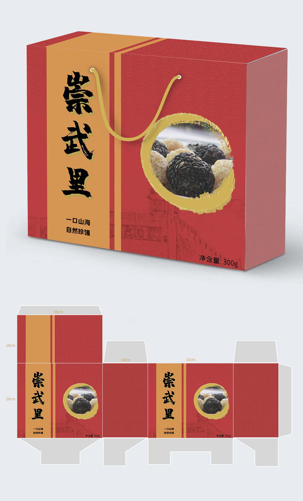

双色芝麻鱼糜制品
黑、白芝麻包裹鱼糜球的产品展示。本人负责配方设计、样品试制与团队统筹，项目获福建省“瑞芳杯”海产品加工与创意大赛二等奖。
精选片段 · 7 秒 · 静音展示我是李欣怡，食品加工与安全硕士。围绕食品保鲜、蛋白提取纯化和配方开发开展研究与实践，将实验评价落实到具体材料和产品。
上海 · 食品研发助理 / 初级食品研发
查看研究项目 ↓播放作品精选 ▷
从样品试制，到成品呈现
黑、白芝麻包裹鱼糜球的产品展示。本人负责配方设计、样品试制与团队统筹，项目获福建省“瑞芳杯”海产品加工与创意大赛二等奖。
精选片段 · 7 秒 · 静音展示核桃脆成品与食用搭配展示。以核桃仁、燕麦为主要原料，采用黑糖与海藻糖复配、水煮及远红外干燥工艺；本人负责配方设计、样品试制与团队统筹。 项目获福建省“旺瓜杯”食品创新创意大赛一等奖。
精选片段 · 7 秒 · 静音展示烘焙装饰作品，展示牡丹纹样、蓝白配色与成品外观，作为食品制作及装饰实践的补充。
精选片段 · 4 秒 · 静音展示食品开发与烘焙实践的成品片段；具体开发过程、本人贡献与项目成果见下方介绍。
原料处理 → 样品制备 → 性能评价 → 食品应用
从蛋壳膜资源化利用出发，研究酶解条件，制备复合保鲜薄膜，并将材料性能测试与草莓贮藏评价结合，探索活性食品包装的应用。
比较酶种、用量、温度和酶解时间；开展薄膜制备、结构表征及机械、阻隔和抗菌相关测试。草莓应用实验跟踪失重率、维生素C、丙二醛、pH和糖度，整理实验结果并完成论文撰写。
第一作者论文
《鸡蛋壳膜酶解物/壳聚糖复合薄膜的制备及性能表征》
《食品工业科技》· 李欣怡、吴夏泠、刘群、翁武银、张玉苍
阅读期刊官网论文介绍 ↗
比较酶解时间、温度和酶浓度，采用离子交换与超滤进行分离纯化，结合酶活测定及SDS-PAGE评价所得样品。
参与实验方案设计及实施，完成酶解提取、分离纯化、活性测定和纯度分析，比较工艺条件下的检测表现并整理实验结果。
提取蛋壳膜功能性蛋白并制备复合海绵敷料，开展吸水性、降解性、凝血性、溶血性及体外细胞毒性测试，参与实验结果与申请材料整理。
发明专利申请已受理
《蛋壳膜资源化利用制备溶菌酶及复合医用敷料的方法》
本人为第二发明人，导师为第一发明人。项目为实验研究及专利申请成果。
用配方、工艺与样品呈现产品想法
以冷冻鱼糜制品为主题，将鱼糜挤出成型后分别包裹黑、白芝麻，形成双色产品方案。结合口感、外观及加工流程，完成样品制作，并协调团队分工与项目进度。
福建省“瑞芳杯”海产品加工与创意大赛二等奖
配方设计 → 鱼糜成型 → 芝麻包裹 → 包装与冷冻保存方案 → 竞赛样品。包装图展示团队作品，本人贡献聚焦食品配方、样品制作与团队统筹。
以核桃仁和燕麦为主要原料，采用黑糖与海藻糖复配，结合水煮和远红外干燥工艺制作样品。从口感、原料搭配、工艺流程与成本考量形成竞赛方案。
福建省“旺瓜杯”食品创新创意大赛一等奖
担任参赛负责人，开展配方设计与样品制作，协调团队分工和产品开发。通过具体原料选择及加工方法，将产品构思落实为参赛样品。
制备马鲛鱼酶解液，结合海带、干贝边设计速食鲜味汤。通过单因素试验、感官评价及正交试验，比较酶解时间和原料添加量对样品的影响，开展配方优化。

食品加工与安全硕士 · 上海
集美大学 · 食品加工与安全硕士
2022.09 - 2025.06 · 全日制
研究方向：生物质高值化利用
福建农林大学 · 食品科学与工程本科（非全日制）
黎明职业大学 · 食品营养与检测大专（全日制）
蛋白酶解、离子交换、超滤、SDS-PAGE；SEM、FTIR、冷冻干燥；食品贮藏评价与实验结果整理。
食品配方试制、烘焙糕点与波兰酵种面包制作。持有西点师高级工、农产品检验员高级工证书。
可进一步交流项目中的实验设计、样品制作、性能评价及食品开发过程。联系方式见收到的投递简历。